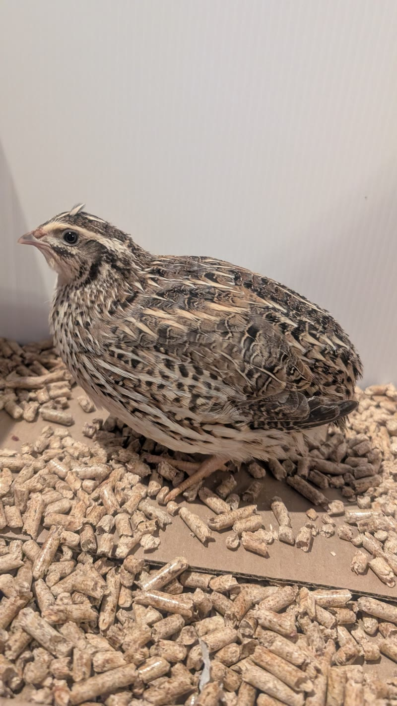

Jannie

- Nom
- Jannie
- Espèce
- Caille japonaise
- Sexe
- Femelle
- Née
- vers le 20 août 2026, même couvée que Mathilda — environ 2 mois (octobre 2026)
- Bague
- pas encore
Nerveuse et débordante d'énergie, Jannie est très curieuse. Elle aime picorer le bois.
Habitudes
À venir.
Préférences / gâteries préférées
À venir.
Journal
À venir.